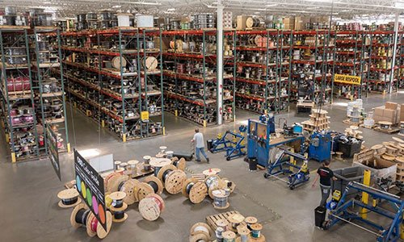

Deflection
Large share of order-status and FAQ volume automated — support volume reallocated to high-value contacts.
A vertical agent suite for retail — order-tracking agent, product-recommendation agent, FAQ and duplicate-order detection agent — grounded in MuleSoft + Informatica customer master and order data. Deployed in 8–12 weeks across the peak-traffic engagement model.

Owns omnichannel customer experience. Peak traffic doubled customer-service volume; the team can't scale headcount. Has Agentforce licenses but no working retail agents.
Industry research shows retail and manufacturing leading 2026 Agentforce adoption. Multiple Salesforce partners now publish dedicated Agentforce for Retail pages with named vertical use cases. Salesforce's Forward Deployed Engineer Partner Network means partners are now expected to deliver named vertical SKUs, not horizontal toolkits.
Large share of order-status and FAQ volume automated — support volume reallocated to high-value contacts.
Real-time duplicate-order detection during peak traffic — protected margin without manual review.
Product recommendations grounded in Informatica customer master + Data Cloud — not generic prompts.
Three agents (order-tracking, recommendation, FAQ + duplicate-order) live end to end.
Real-time order status, automated alerts for delays and issues. Grounded in Salesforce, ERP, and Informatica master data.
Grounded in customer 360, SKU catalog, and live inventory position. Personalized without prompt-engineered shortcuts.
Peak-traffic deflection plus duplicate-order detection — margin protection in real time.
API-led integration across e-commerce, ERP, POS, inventory, and Salesforce — the connective tissue.
Customer and product master grounding layer — the data foundation the agents trust.
Flex Gateway policy, Agent Visualizer monitoring — every agent action audited during peak load.
Problem. Order-status volume overwhelming the support team during peak traffic; duplicate orders eroding margin with no real-time detection.
Solution. Prowess deployed order-tracking, product-recommendation, and FAQ + duplicate-detection agents grounded in customer master through Agent Fabric.
Outcome. Customer-experience friction reduced, duplicate-order leakage contained, support volume deflected to high-value contacts.
Every engagement starts with a working demo of the order-tracking and duplicate-order agents grounded in a sample order dataset — before any commitment to the full suite.